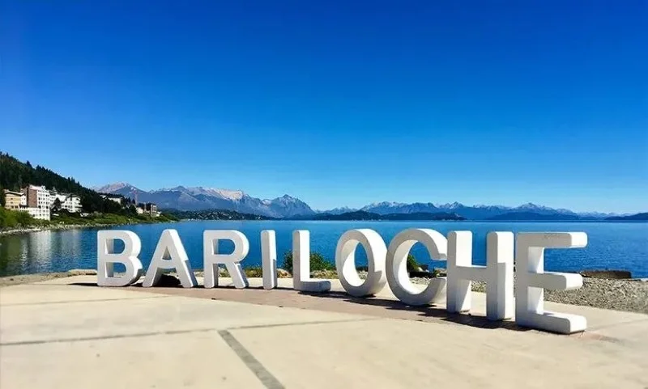
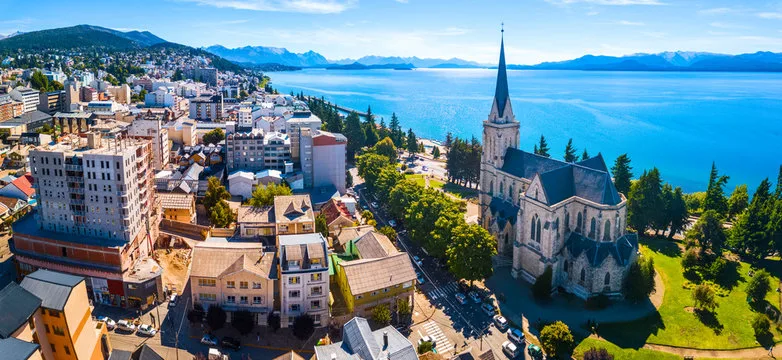
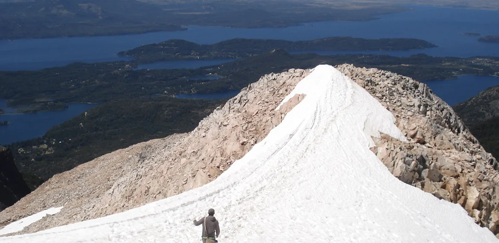
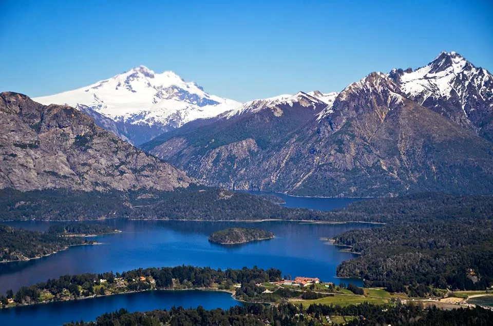
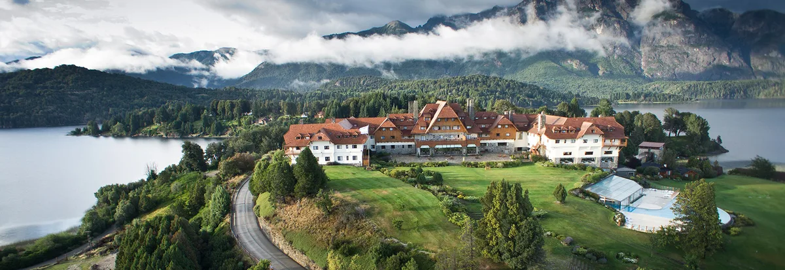
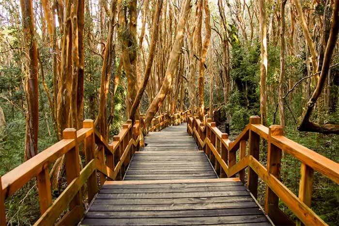
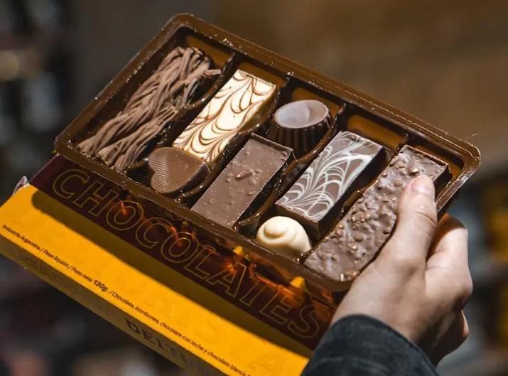
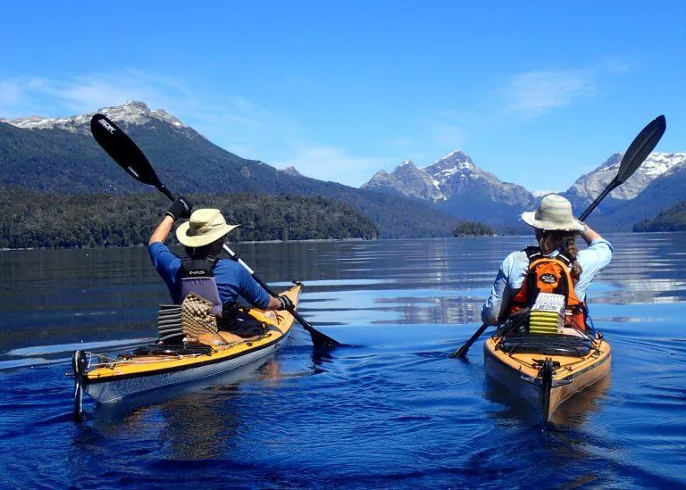
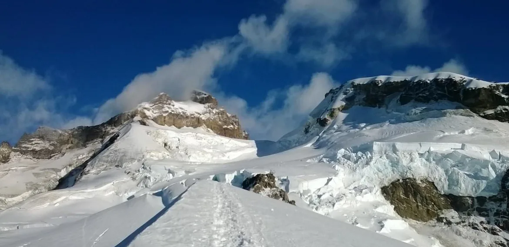
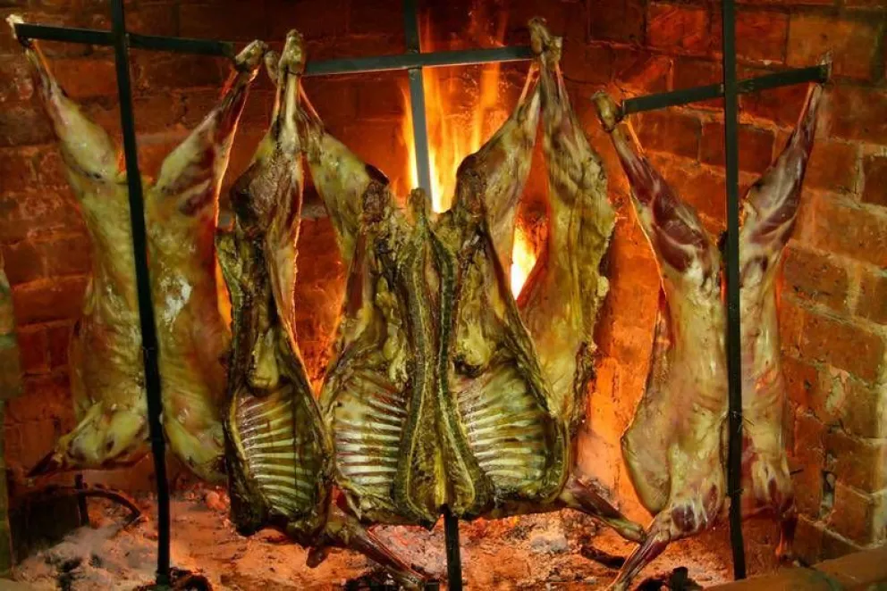

Sur Global, principio de todo.

坐落于纳韦尔瓦皮湖畔，被火山和秋日如火的南山毛榉林环抱，圣卡洛斯-德-巴里洛切是阿根廷巴塔哥尼亚最受欢迎的旅游目的地。这里是巧克力之都、南半球滑雪圣地，也是安第斯山脉徒步的天堂。令人惊叹的阿尔卑斯风格建筑与无拘无束的自然美景在此交融。无论哪个季节，巴里洛切都不会让人失望。

从高处俯瞰巴里洛切：城市、纳韦尔瓦皮湖与永恒的安第斯山脉背景。
马普切人和特韦尔切人在这片土地上生活了数千年，远早于任何欧洲人翻越安第斯山脉。纳韦尔瓦皮湖在马普度贡语中意为"老虎之岛"，曾是普埃尔切人和佩韦恩切人的领地，他们沿着贸易与战争的古道往来于山脉两侧。耶稣会传教士在17世纪尝试建立传教点；马斯卡尔迪神父在纳韦尔瓦皮湖畔建立的传教所于1717年在数十年冲突后被当地原住民摧毁。
现代历史始于1895年，测量师弗朗西斯科·帕斯卡西奥·莫雷诺——曾用印第安独木舟横渡此湖、后来将自己的名字赋予了著名冰川的那个人——将湖边三平方里格的土地捐赠给阿根廷国家。这片土地成为该国第一个自然保护区，也是今日国家公园的雏形。德国商人卡洛斯·维德霍尔德在同年开设了第一家杂货店，小镇由此发展壮大。官方地名"圣卡洛斯-德-巴里洛切"融合了基督教守护圣人与原住民地名vuriloche（意为"山那边的人"）的变体。
1934年比耶德马-巴里洛切铁路的通车，将这个村庄变成了旅游胜地。建筑师亚历杭德罗·布斯蒂略以当地火山岩和柏木设计了市政中心、拉奥拉奥酒店及多座标志性建筑——这种风格永久定义了城市的视觉形象。20世纪来自中欧的移民——德国人、瑞士人、奥地利人——带来了手工巧克力、山地建筑风格与饮茶文化。今天，巴里洛切生产阿根廷70%以上的精品巧克力。
卡特德拉尔山银装素裹，是南美最大滑雪场体验滑雪与单板滑雪的最佳时节。旺季需提前数月预订。
徒步、皮划艇与湖滨休闲。白昼漫长，平均气温20°C。最适合小环线、洛佩斯山与国家公园步道。
南山毛榉与智利山毛榉将染上红橙两色。游客稀少，物价亲民，光线最具摄影价值。巴里洛切的秘密季节。
从布宜诺斯艾利斯（2小时）、科尔多瓦、门多萨及其他城市均有直飞航班。特尼恩特·路易斯·坎德拉里亚机场距市中心15公里——可乘出租车、专车或72路城市公交。
从布宜诺斯艾利斯出发：卧铺车厢约20小时。从内乌肯出发：5小时。从埃斯克尔出发：沿40号公路4小时。客运站距市政中心仅数个街区。
著名的巴里洛切—蒙特港湖泊穿越：乘坐巴士与双体船穿越边境湖泊与火山，历时两天。这本身就是一段难忘的体验，而不仅仅是交通方式。
这条传奇的巴塔哥尼亚公路途经巴里洛切。无论从南北哪个方向驶入，沿40号公路的行程都是南美洲最壮观的驾驶体验之一。

南美最大的滑雪场，距市中心19公里。逾120公里的雪道、37座缆车，山脚设有餐厅与酒店的山地村庄。雪季从6月延续至10月（有时更早降雪）。山顶景色绝伦——一侧是纳韦尔瓦皮湖，另一侧是特罗纳多尔火山——举世无双。夏季，缆车对徒步者和山地自行车爱好者开放。

巴里洛切最易到达、最为壮观的徒步线路。从城市出发，攀登3至4小时可抵达海拔1600米的山间小屋。从顶部俯瞰——纳韦尔瓦皮湖560平方公里的湖面在脚下延伸——这是巴塔哥尼亚被拍摄最多的景观之一。小屋提供餐饮与住宿：想在湖面日出时分迎接朝阳的游客，在此过夜绝对值得。

巴里洛切的经典路线：65公里驾车或骑行，沿纳韦尔瓦皮湖岸穿越坎帕纳里奥山（必去观景台）、拉奥拉奥酒店、帕努埃洛港与洛佩斯湾。坎帕纳里奥山乘缆车10分钟可达，提供该地区最佳全景视野。选择日落时分前往，美景加倍。

阿根廷最古老的国家公园（1934年建立），将整座城市团团围住。逾70万公顷的冰川、火山、冬青山毛榉与草莓树森林，以及不可思议的蓝色湖泊。公园步道从2小时短途漫步到多日穿越皆有。特罗纳多尔火山——海拔3491米，拥有活跃冰川——是最高峰，也是最壮观的地标。免费进入；部分步道需提前登记。

从帕努埃洛港乘双体船出发（单程1.5小时）。维多利亚岛有鹿群与特罗纳多尔火山的壮丽景色。最令人期待的是克特里韦半岛上的草莓树森林——这种肉桂橙色的树木以如此密集的形态存在于地球上的其他任何地方。沃尔特·迪士尼在1940年代造访此地，据说从中汲取了《小鹿斑比》森林场景的灵感。半日游。

巴里洛切出产阿根廷最精美的巧克力，这一传统由20世纪初抵达的欧洲巧克力匠传承而来。米特雷大街汇聚了大多数手工巧克力店：Mamuschka、Rapa Nui、Familia Weiss、Del Turista。若想体验更地道的风味：梅利帕尔社区或埃尔博尔松的小批量制作工坊出品更精致、更少商业化的巧克力。覆盆子口味配南山毛榉树皮的巧克力，在多项评选中被列为南美最佳。

阿根廷面积最大的巴塔哥尼亚湖泊（560平方公里）拥有众多湖湾可供皮划艇探索。多家运营商从湖滨提供向导陪同游览。对于经验丰富的桨手：乘海洋皮划艇横渡至维多利亚岛（8小时）是该地区的经典挑战。也有提供在岛上露营的多日行程。

巴里洛切的白色巨人。沿七湖公路驱车至帕姆帕林达（距市中心80公里），由此出发有多条步道，其中一条可抵达黑冰川。前往特罗纳多尔山观景台的徒步往返约需4小时。无需高山攀登经验；即便在一月份也需穿着合脚的鞋子和保暖衣物。

巴里洛切的烤肉标杆餐厅。烤架上的巴塔哥尼亚羔羊、纳韦尔瓦皮湖景观、庄园氛围。价格不菲，但物有所值。
城中历史最悠久的餐厅。山地烹饪：湖鳟鱼、炖野猪、奶酪火锅。年代感装潢，当地常客聚集。
以当季巴塔哥尼亚食材为主的创作料理小馆。菜单随市场供应变化。夏冬旺季需提前预订。
朴实无华的家常菜：炖菜、意面、炸肉排。本地人钟爱的平价好去处。不接受预订，建议早到。
在巴塔哥尼亚草原上放牧的羔羊，肉质比其他品种更精瘦、风味更浓郁。烤架烤制或十字架烤制，配奇米丘里酱或仅以巴塔哥尼亚盐调味。优先选择使用内乌肯或里奥内格罗本地羔羊的餐厅，与工厂化饲养的羔羊相比，品质天壤之别。